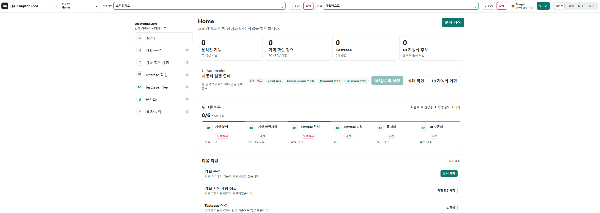
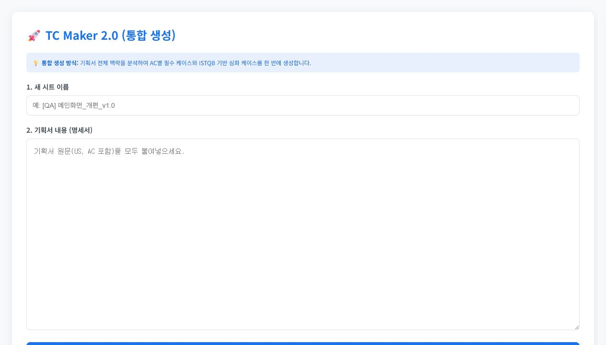

요구사항을 테스트 가능한 기준으로 번역합니다
기획서와 화면 흐름을 분석해 테스트 범위, 예외 케이스, 회귀 범위를 정의합니다. 단순 기능 확인보다 사용자 흐름과 운영 조건을 기준으로 검증 기준을 세웁니다.
QA ENGINEER · 13년 8개월
모바일/웹 서비스의 테스트 전략 수립부터 릴리즈 검증, 이슈 분석, QA 프로세스 구축까지 수행해온 QA Engineer입니다. 요구사항을 검증 가능한 기준으로 바꾸고, 운영 중 발생하는 이슈까지 재현 가능한 흐름으로 정리하는 일을 중요하게 생각합니다.
PROFILE
기획서와 화면 흐름을 분석해 테스트 범위, 예외 케이스, 회귀 범위를 정의합니다. 단순 기능 확인보다 사용자 흐름과 운영 조건을 기준으로 검증 기준을 세웁니다.
Sentry, Grafana, DataDog, Appflow 기반 모니터링과 CS/장애 대응 협업을 통해 이슈 재현, 원인 분석, 수정 확인까지 QA 흐름에 포함해 관리했습니다.
테스트 계획, 테스트케이스, 결과 리포트, 이슈 관리 기준을 문서화했고, QA Chapter Lead로 업무 분장, 산출물 품질 리뷰, QA 기준 정리를 수행했습니다.
QA Flow 통합 관리 도구 MVP와 Gemini 기반 테스트케이스 작성 도구를 제작해 기획 분석, 확인사항 정리, TC 작성, 자동화 후보 관리의 반복 구간을 줄였습니다.
FLAGSHIP
기획 분석, 확인사항, Testcase 작성, 리뷰, 문서화, UI 자동화 후보까지 흩어지기 쉬운 QA 산출물을 하나의 흐름으로 연결하는 MVP를 만들었습니다.

SELECTED WORK
01 · Bookips
1인 QA 환경에서 마켓, 엑스퍼트, Print App, 저작툴, CS 대응 영역의 신규 기능 및 유지보수 QA를 담당했습니다.
02 · Riiid
New Santa Project 초기 단계부터 QA 계획 수립, 테스트 프로세스 구축, 릴리즈 검증을 담당했습니다.
03 · Web MVP
기획 소스에서 기능과 확인사항을 찾고, Testcase 작성·리뷰·문서화·UI 자동화 후보까지 진행 상태를 이어서 관리하는 QA 워크플로우 도구입니다.
04 · Google Apps Script
Google Apps Script와 Gemini API를 결합해 기획서 원문에서 테스트케이스 초안을 생성하고, Google Sheets에 바로 정리되도록 만든 테스트케이스 작성 보조 도구입니다.

TECH STACK
QA Core
Product QA
Monitoring & Collaboration
AI